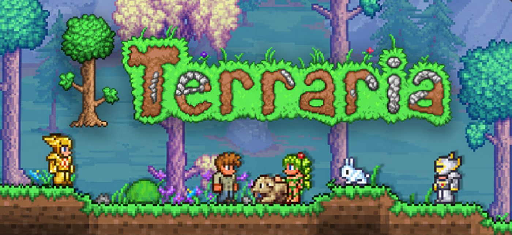

Um leikinn
Terraria er 2D sandbox-leikur sem kom út 16. maí 2011, þróaður og gefinn út af bandaríska leikjafyrirtækinu Re-Logic. Leikurinn var skapaður af Andrew "Redigit" Spinks og er oft lýst sem blöndu af Minecraft og hliðarskrunandi (side-scrolling) aðgerðaleikjum eins og Metroid.
Heimur leiksins er algjörlega "procedurally generated" — það þýðir að hver heimur er öðruvísi í hvert sinn sem nýr er búinn til. Leikmenn grafa sig niður í jörðina, byggja hús og varnarvirki, safna auðlindum, smíða vopn og búnað, og berjast við tugi mismunandi "boss" skrímsla, allt frá Eye of Cthulhu til Moon Lord.
Leikurinn hefur verið í stöðugri þróun í yfir 15 ár og er einn langlífasti indie-leikur sögunnar — árið 2026 fagnaði hann 15 ára afmæli og hafði þá selst í yfir 70 milljónum eintaka. Hann er fáanlegur á PC, macOS, Linux, öllum helstu leikjatölvum og farsímum, og styður margspilun (multiplayer) bæði á neti og í staðarneti.
- Óendanlega mismunandi heimar, algjörlega eyðilegganlegir og mótanlegir
- Yfir 20 "boss" bardaga og þúsundir hluta og vopna
- Smíði, ræktun og búnaðargerð ("crafting")
- Margspilun fyrir allt að 8 leikmenn (eða fleiri á eigin netþjóni)
- Reglulegar, stórar og fríar efnisuppfærslur frá 2011 til dagsins í dag
Myndband
Opinbert kynningarmyndband fyrir uppfærsluna 1.4.5 "Bigger & Boulder":
Hljóð
Þekktasta lagið í leiknum — "Overworld Day" tónlistin sem spilast á daginn í leiknum:
Kort
Re-Logic, fyrirtækið sem gerir Terraria, er staðsett í Floyds Knobs, Indiana í Bandaríkjunum: